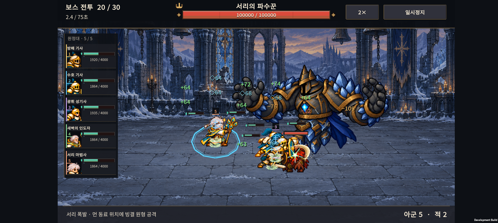

IGNIS: ASHEN OATH · 2026-11-07
v0.70 · PixelFX 전투 효과 3종
검 타격·회복·빙결을 게임에 시험 적용했다. 기존 / 적용 애니메이션 비교 화면에서 속도와 배경을 바꿔 볼 수 있다.
Galaxy Buddy2 실제 촬영 · 18초 · 체력을 높인 QA 편성으로 전투 밸런스와 무관하다.
| 효과 | 달라진 점 |
|---|
| 근접 타격 | 금빛 궤적 8프레임. 실제 명중에 맞춰 0.24초 재생하며 좌우 방향을 반영한다. |
| 회복 | 연녹색 입자 16프레임, 0.64초. 대상의 이동을 따라가고 보호막과 구분한다. |
| 빙결 | 중심을 비운 회청색 결정. 실제 빙결 상태에서만 표시하며 모션 줄이기는 정지 프레임으로 처리한다. |
검증 결과
40개 프레임·투명 셀 경계·텍스처 임포트·회복/보호막 구분·일시정지·만료 검사를 통과했다. Android IL2CPP APK를 빌드하고 Buddy2에 설치했다.
1×·2×·섬광/모션 줄이기 2×에서 각각 시뮬레이션 32초를 실행했다. 모두 기본 공격 147회, 회복 31회, 빙결 8회였으며 런타임 예외는 없었다. 기존 저장 파일과 PlayerPrefs도 복원 확인했다. 녹화와 화면 캡처가 포함되어 성능 벤치마크로 해석하지 않는다.

아트와 출처
PNG 3개 합계 약 38.5 KiB, 비압축 RGBA 약 1.32 MiB. 텍스처를 캐시하고 프레임 UV를 선택한다. PixelFX의 검·회복 효과를 조정하고 빙결은 PixelFX 도형으로 구성했다. 기본 샘플 캐릭터나 갤러리 폰트는 가져오지 않았다. MIT 라이선스와 저작권 고지를 포함했다.
후속 수정
사용자 요청에 따라 왼쪽 아군 목록에서 공격마다 깜빡이는 색 띠를 제거했다. 고정 번호·고유 색, 체력·보호막·상태 이상, 눌렀을 때 동료 위치 강조는 유지한다. 위 영상과 캡처는 이 수정 전의 PixelFX 검증 자료다.
검 궤적은 현재 근접 타격 공통 표시이며 맞은 대상 위치에 나온다. 아군이 공격하면 적에게, 적이 공격하면 아군에게 표시된다. 무기별 효과 구분은 아직 적용하지 않았다.
상세 작업 기록 · 실기기 결과